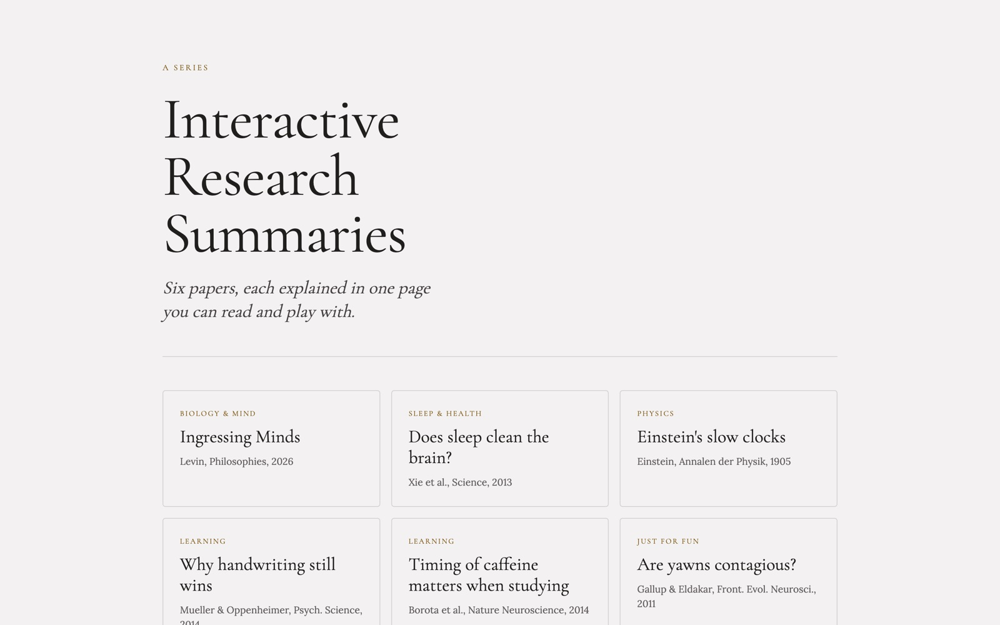
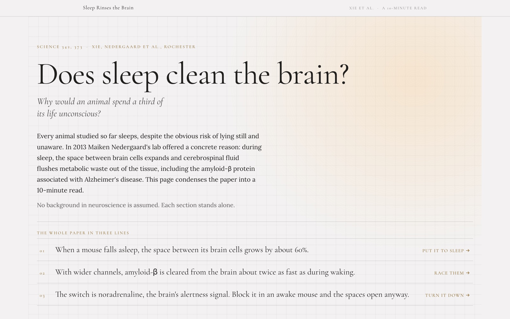
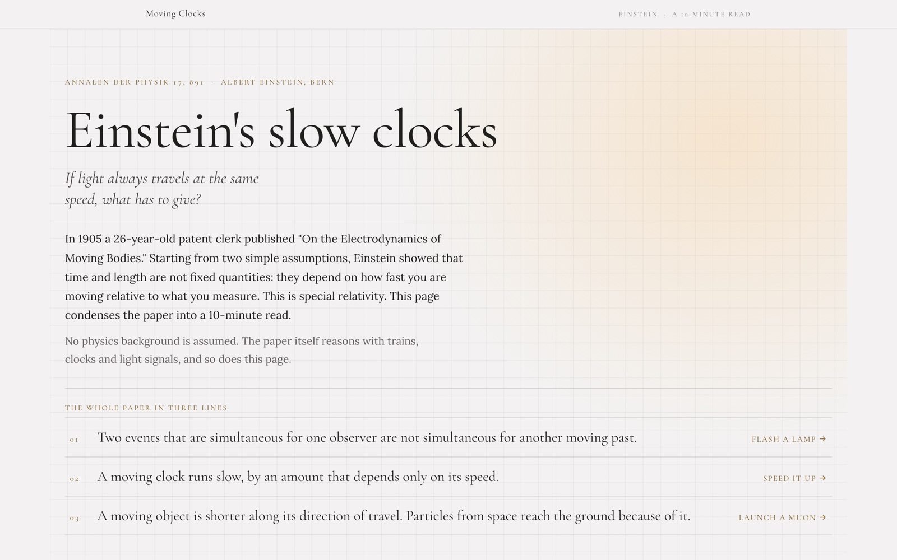

← All projects
Interactive Research Summaries
2026
Six research papers, each explained in simple terms, with interactive visuals.



What it is
Each page takes one paper and explains it for a reader with no background in the field, in about ten minutes. It opens with the whole paper in three lines, and each line leads to a small experiment to run on the page.
- Ingressing Minds. Levin, Philosophies, 2026
- Does sleep clean the brain? Xie and others, Science, 2013
- Einstein’s slow clocks. Einstein, Annalen der Physik, 1905
- Why handwriting still wins. Mueller and Oppenheimer, Psychological Science, 2014
- Timing of caffeine matters when studying. Borota and others, Nature Neuroscience, 2014
- Are yawns contagious? Gallup and Eldakar, Frontiers in Evolutionary Neuroscience, 2011
What I did
- Chose the papers.
- Read each one closely.
- Built something to try for each claim.
- Designed and shipped the series.It is hosted on GitHub Pages.
Who did what
- Papers
- The authors named above. Each page summarises their work and links to it.